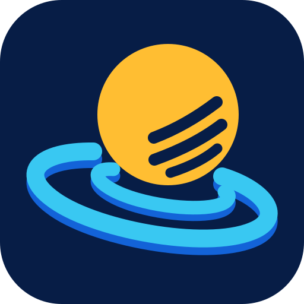
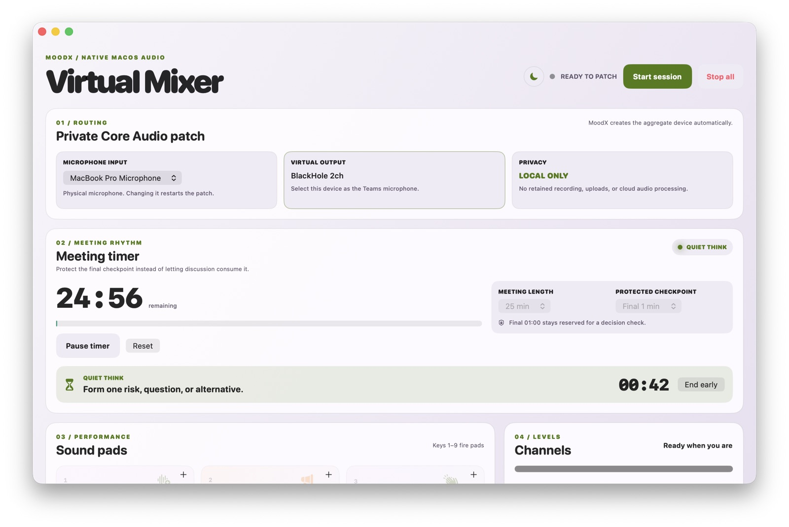

MoodXMoodX is a local macOS mixer for facilitators. Open up quiet Teams meetings with sound pads, then give people the time and space to actually contribute.

Mix your mic with your own sound effects and send it all to Teams through BlackHole.
A protected decision checkpoint keeps the last minutes for actually deciding.
A 45-second pause: what risk, question or alternative haven't we considered?
No recording, no scoring, no cloud. Optional English/Japanese transcription runs locally.